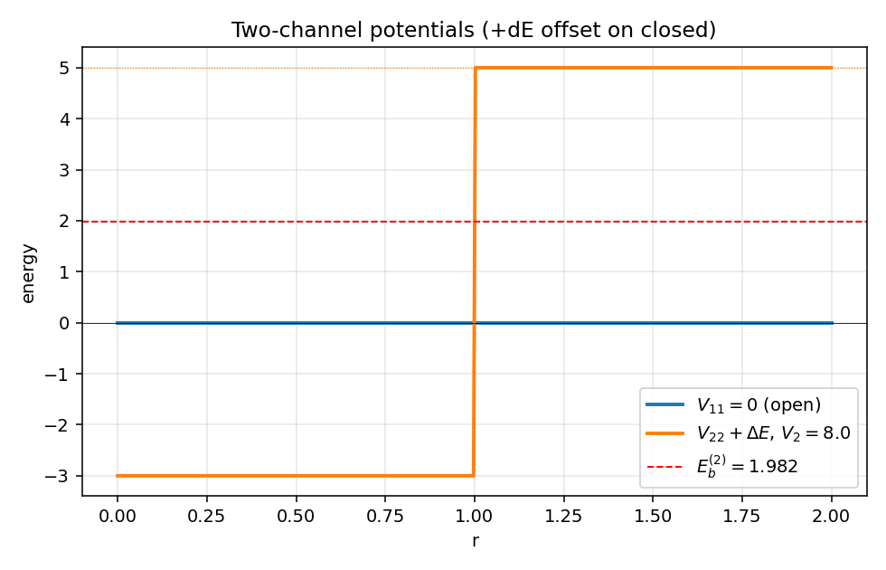
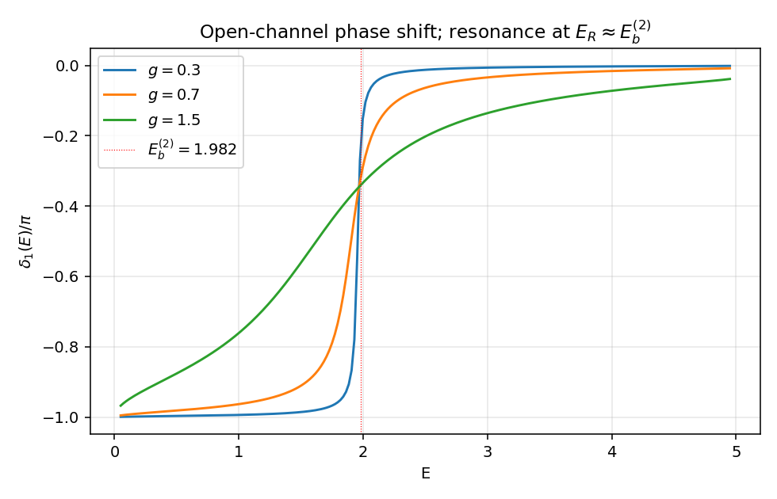
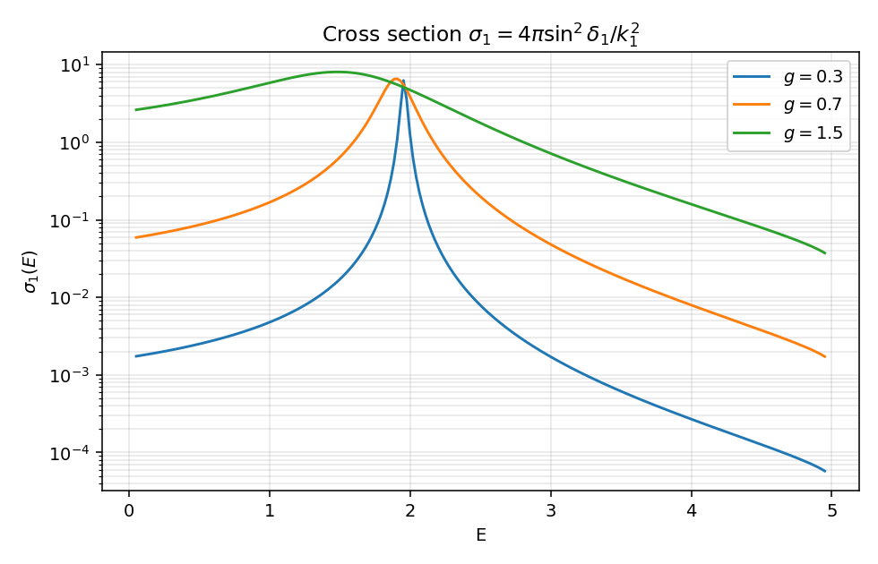
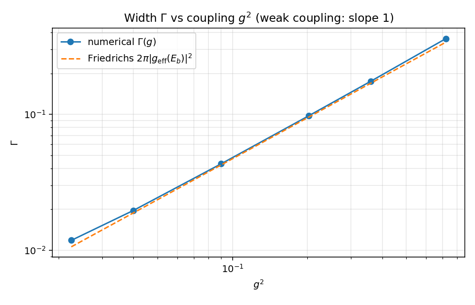

双通道 Feshbach 共振#
第 9 篇可解模型，目标只有一个：把 01_friedrichsModel.zh.md 抽象的"\(|d\rangle\) 与 \(|E\rangle\) 通过 \(g(E)\) 耦合"图像，落到一组真正能数值积分的耦合径向方程上。Friedrichs 笔记把共振机制写成自能 \(\Sigma(z) = \int dE'\,|g(E')|^2/(z-E')\)，但 \(|d\rangle\)、\(g(E)\) 都是孤悬空中的对象。本篇造一个最小双通道模型，让闭通道里的真实方阱束缚态扮演 \(|d\rangle\)，让两个通道间的短程耦合扮演 \(V\)，让积分给出的 \(\Sigma(z)\) 与 Friedrichs 公式直接逐项对账。
约定 \(\hbar = 1\)，\(2m = 1\)，\(E = k^2\)。s 波，所以问题等价于半线 \(r > 0\) 的耦合一维方程。
模型设定#
两个 s 波径向波函数 \(u_1(r), u_2(r)\)，满足
通道波数
只关心阈值之间的能量 \(0 < E < \Delta E\)：通道 1 是开通道（\(k_1\) 实），通道 2 是闭通道（\(k_2^2 < 0\)，外部 \(u_2 \to 0\)）。势取最简：
开通道全程自由；闭通道是深 \(V_2\)、宽 \(R\) 的吸引方阱；通道间的耦合是支撑半径同样为 \(R\) 的常值短程耦合 \(g\)。具体取 \(V_2 = 8,\; R = 1,\; \Delta E = 5\)，\(g\) 留作扫描参数。
物理图像：能量 \(E < \Delta E\) 时无法激发到通道 2 自由态，但是闭通道方阱会支撑一个 s 波束缚态 \(E_b^{(2)}\)；当开通道入射能量 \(E\) 接近这个束缚能时，耦合 \(V_{12}\) 让粒子短暂地"住进"闭通道束缚态再放出，构成共振。这就是 Feshbach 共振。
与 Friedrichs 模型的字典#
把本模型逐项翻回 01_friedrichsModel.zh.md 的语言，是这一篇的核心收获。
| 本模型 | Friedrichs 笔记 |
|---|---|
| 闭通道孤立束缚态 \(\phi_b^{(2)}(r)\)（解耦极限 \(g = 0\)） | 离散态 \(\lvert d\rangle\)，01_friedrichsModel.zh.md:60 |
| 闭通道束缚能 \(E_b^{(2)}\) | \(E_d\)（解耦能量），01_friedrichsModel.zh.md:60 |
| 开通道自由 s 波 \(u_E^{(0)}(r) = \sin(k_1 r)/\sqrt{\pi k_1}\) | 连续态 \(\lvert E\rangle\)，能量归一 |
| 通道间耦合 \(V_{12}(r) = g\,\theta(R-r)\) | 耦合算符 \(V\)，01_friedrichsModel.zh.md:82 |
| \(g_{\rm eff}(E) = \int_0^\infty \phi_b^{(2)}(r)\, V_{12}(r)\, u_E^{(0)}(r)\, dr\) | 耦合矩阵元 \(g(E) = \langle d\lvert V\rvert E\rangle\) |
| \(\Sigma(z) = \int_0^\infty dE'\,\lvert g_{\rm eff}(E')\rvert^2 / (z - E')\) | 自能 \(\Sigma(z)\)，01_friedrichsModel.zh.md:216 |
| 共振位置 \(E_R\)（\(\delta_1\) 跨过 \(\pi/2\) 处） | 极点方程 \(z - E_d - \Sigma(z) = 0\) 的实部，01_friedrichsModel.zh.md:222 |
| 共振宽度 \(\Gamma\)（\(\delta_1\) 的 \(\pi\) 跳跃宽度） | \(\Gamma(E) = 2\pi\lvert g(E)\rvert^2\)，01_friedrichsModel.zh.md:486 |
| 复极点 \(E_R - i\Gamma/2\) | \(z_* = E_R - i\Gamma_R/2\)，01_friedrichsModel.zh.md:554 |
数值上我们要验证的核心命题：本模型在弱耦合 \(g\) 下的共振宽度 \(\Gamma(g)\)，等于由 Friedrichs 公式直接计算的 \(2\pi |g_{\rm eff}(E_b^{(2)})|^2\)。这个等价不再是符号操作——是两套独立计算的数字对照。
闭通道孤立束缚态#
设 \(g = 0\)，闭通道方程退化为 s 波方阱
记 \(\kappa = \sqrt{\Delta E - E_b}\)（外部衰减率），\(K = \sqrt{V_2 - (\Delta E - E_b)}\)（阱内波数）。\(u_2(0) = 0\) 选 \(\sin(Kr)\)，外部选 \(e^{-\kappa r}\)，对数导数匹配给出
取 \(V_2 = 8, R = 1, \Delta E = 5\)：阱深超过 \(\pi^2/4 \approx 2.47\)，恰好支持 1 个 s 波束缚态。数值二分给出
落在开通道散射区 \((0, \Delta E) = (0, 5)\) 内——这是共振机制启动的前提。归一化波函数
这条 \(\phi_b^{(2)}\) 在 Friedrichs 字典里就是 \(|d\rangle\) 在径向表象下的具体波函数。
矩阵 Numerov#
把 \(\mathbf u(r) = (u_1, u_2)^\mathsf T\) 写成 2 维向量，方程变成
\(V(r)\) 是 \(2\times 2\) 势矩阵。Numerov 法直接推广：对常势区间，
每步要解一个 \(2\times 2\) 线性系统。本模型里 \(F\) 在 \(r < R\) 与 \(r > R\) 上分别恒定，所以矩阵 \(A_{\pm} = I \mp h^2 F/12\) 与 \(B = I + 5h^2 F/12\) 全程预算一次，传播矩阵 \(A_+^{-1} \cdot 2B\) 在每个区间内复用，仅在 \(r = R\) 跨界时切换。
边界条件 \(u_1(0) = u_2(0) = 0\) 留下两个独立解的自由度。从 \(r = h\) 起取两个独立起始向量
各自传播到 \(r_{\rm max} = 8\)。任意线性组合
仍是耦合方程的解。物理解需要再加一条闭通道边界条件：\(u_2\) 在 \(r \to \infty\) 必须衰减，即
这给 \((\alpha_1, \alpha_2)\) 一个齐次线性约束，解出比例后唯一确定（除整体归一化）。把组合好的 \(u_1(r)\) 在 \(r > R\) 处写成 \(C_s\sin(k_1 r) + C_c\cos(k_1 r)\)，两点取样得
代码 90 行内做完了所有工作。
数值结果与图#
完整脚本见 09_feshbach_two_channel.py。先看通道势的全景：

蓝色平线是开通道（自由），橙色阶梯是闭通道——内部深 \(-V_2 + \Delta E = -3\)，外部抬高到阈值 \(\Delta E = 5\)。红虚线 \(E_b^{(2)} \approx 1.982\) 是闭通道孤立束缚能；它正好落在开通道散射连续谱里，是共振的种子。
开通道相移 \(\delta_1(E)\) 对若干 \(g\)：

三条曲线在 \(E_R \approx E_b^{(2)}\) 附近都把相移扫过 \(\pi\)。\(g = 0.3\) 时跳变非常陡峭（共振窄）；\(g = 0.7\) 中等；\(g = 1.5\) 时跳跃被抹开成宽缓的 S 形。这是 Friedrichs 笔记 01_friedrichsModel.zh.md:486 中 \(\Gamma(E) = 2\pi |g(E)|^2\) 的直接体现：耦合越强，宽度越大。注意相移的整体偏移 \(-\pi\) 是 Levinson 印记（耦合后系统多出一个准束缚态）。
开通道弹性截面 \(\sigma_1(E) = 4\pi\sin^2\delta_1(E)/k_1^2\)：

经典 Breit-Wigner 峰，正好坐在 \(E_b^{(2)}\) 上方。\(g\) 越小峰越尖、越接近 \(E_b^{(2)}\)；\(g\) 越大峰被压宽并向高能稍微漂移（实部修正 \(\Delta(E)\) 起作用，对应 01_friedrichsModel.zh.md:485）。这正是冷原子物理里"调 \(g\) 调 Feshbach 共振宽度"的简化模型。
最后是这一篇的核心对账图——共振宽度 \(\Gamma\) 与 \(g^2\) 的关系：

横轴 \(g^2\)（log），纵轴数值提取的 \(\Gamma\)（log）。蓝色圆点是从相移导数极值 \((\partial_E \delta_1)|_{E_R} = 2/\Gamma\) 直接读出的数值宽度。橙色虚线是 Friedrichs 公式
弱耦合区两条线几乎重合，斜率严格为 1（\(\Gamma \propto g^2\)）；只有当 \(g \gtrsim 0.5\) 后数值点开始向上偏离虚线——高阶 \(g^4\) 修正进场。这把 Friedrichs 笔记里 \(\Gamma(E) = 2\pi |g(E)|^2\) 这条抽象公式，第一次落到了独立计算的两组数字上。
\(g_{\rm eff}\) 的闭式#
由于 \(V_{12}\) 与 \(\phi_b^{(2)}\) 都在 \(r \le R\) 处支撑，且 \(V_{12}\) 是常值，
其中 \(A\) 是闭通道束缚态归一化常数，\(K = \sqrt{V_2 - (\Delta E - E_b^{(2)})}\)。这是一个普通形状因子，没有发散。代入 \(E = E_b^{(2)}\) 给出图 4 的虚线。
注意能量归一约定：自由开通道的连续态 \(u_E^{(0)}(r) = \sin(k_1 r)/\sqrt{\pi k_1}\) 满足 \(\langle E | E'\rangle = \delta(E - E')\)。这个 \(\sqrt{\pi k_1}\) 因子是 \(\Gamma = 2\pi|g_{\rm eff}|^2\) 公式合上数值的关键——少了它会差一个 \(k_1\) 因子，弱耦合 log-log 图上虚线斜率不变但纵向偏移。
sanity checks#
09_feshbach_two_channel.py 的 sanity_checks 跑三件事：
- \(g = 0\) 时 \(\delta_1(E) = 0\pmod \pi\) 在多个 \(E\) 上严格成立——耦合关掉，开通道完全自由，相移消失。
- \(g = 0.3\) 时数值 \(\Gamma\) 与 Friedrichs 闭式 \(2\pi |g_{\rm eff}(E_b^{(2)})|^2\) 相对误差约 \(1.6\%\)，已在弱耦合区。
- \(g \to 0\) 时数值共振位置 \(E_R \to E_b^{(2)}\)；\(g = 0.2\) 时偏差 \(< 0.1\)，与一阶能量位移 \(\Delta(E_b^{(2)})\) 符号一致。
跑一次约 30 秒，所有图写到 assets/09_feshbach_two_channel/。
与 Feshbach 投影的对账#
01_friedrichsModel.zh.md:228 给出 Feshbach 投影的形式语言：\(P = |d\rangle\langle d|\)，\(Q = 1 - P\)，有效哈密顿量
把 Friedrichs 抽象语言翻译到本模型上，\(P\) 投到闭通道孤立束缚态张成的 1 维子空间，\(Q\) 投到其正交补（包括开通道连续谱以及闭通道里 \(\phi_b^{(2)}\) 之外的部分）。在弱耦合极限里只保留主导贡献——开通道自由连续态，于是
正是 01_friedrichsModel.zh.md:216 的定义直接照抄。Sokhotski-Plemelj 取边界值
01_friedrichsModel.zh.md:486 与本节图 4 的两条曲线在 \(E = E_b^{(2)}\) 处的吻合给同一条公式做了独立的数值证明。
实部 \(\Delta(E)\) 给共振位置的偏移 \(E_R = E_b^{(2)} + \Delta(E_R)\)；虚部 \(\Gamma\) 给宽度。本篇没有单独画 \(\Delta(E)\)，但它已经隐藏在图 3 里——\(g\) 增大时 BW 峰中心从 \(E_b^{(2)}\) 略向高能漂移，正是 \(\Delta(E_R)\) 随耦合增大变得不可忽略。
与 delta-shell、3D 方阱的对照#
第 3 篇 03_delta_shell.zh.md 用单通道排斥壳产生共振：内部腔体的离散态通过壳泄漏。第 2 篇 02_square_well_3d.zh.md 在 s 波给出散射长度与束缚态。这两个例子都是单通道共振或束缚态，与 Friedrichs 的对应需要"等效耦合 \(|g_{\rm eff}|^2 \sim 1/\gamma\)"这种翻译（见 03_delta_shell.zh.md:187）。
本模型的优势在于，"离散态"\(|d\rangle\) 与"连续谱"\(|E\rangle\) 直接对应于两个物理通道的不同模式，耦合 \(g\) 是哈密顿量里写出来的常数，不需要任何反直觉的"耦合反比"——\(g\) 大就是共振宽。这正是 Feshbach 投影在多通道散射里的天然语言。
next-step#
- 共振极点的复延拓：把 \(E\) 解析延拓到第二张面，数值找 \(\delta_1\) 的复极点 \(E_* = E_R - i\Gamma/2\)，与 BW 拟合的 \((E_R, \Gamma)\) 直接比较；这是
01_friedrichsModel.zh.md:554的具体化。 - 强耦合区 \(\Gamma\) 的偏离：图 4 大 \(g\) 处数值高于 Friedrichs 一阶预测，取的是 \(\Sigma\) 的高阶迭代或 \(z_* - E_d - \Sigma^{\rm II}(z_*) = 0\) 的全极点解；可以用 Newton 迭代直接找。
- 散射长度的 Feshbach 调谐：调 \(\Delta E\) 让 \(E_b^{(2)} \to 0\) 时开通道散射长度 \(a_1\) 发散，复刻冷原子 Feshbach 共振点的 unitary 极限。
- 阈值上方多通道（\(E > \Delta E\)）：闭通道打开为第二条开通道，\(S\) 矩阵变成 \(2\times 2\)，幺正性变成 \(|S_{11}|^2 + |S_{12}|^2 = 1\)；第 10 篇可以做。
Created: 2026-05-08